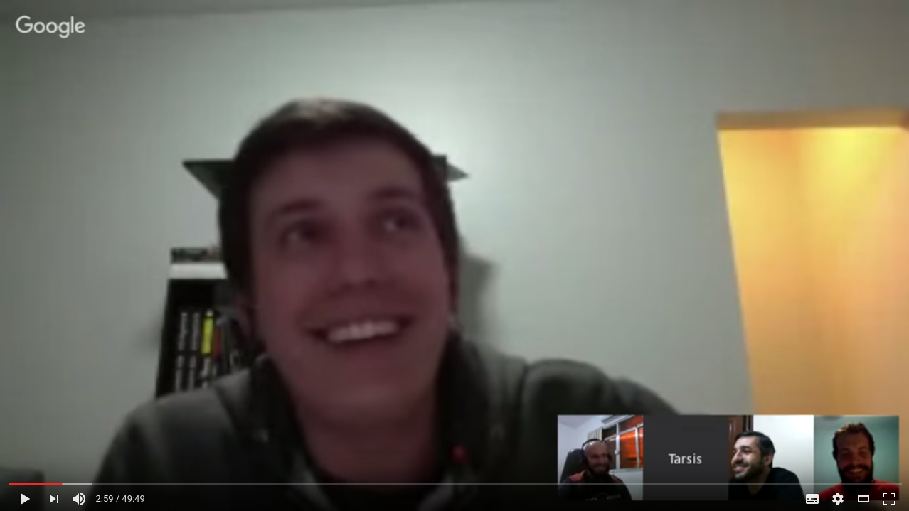
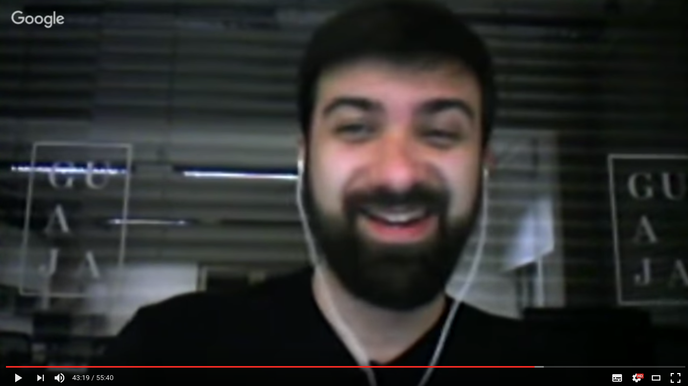
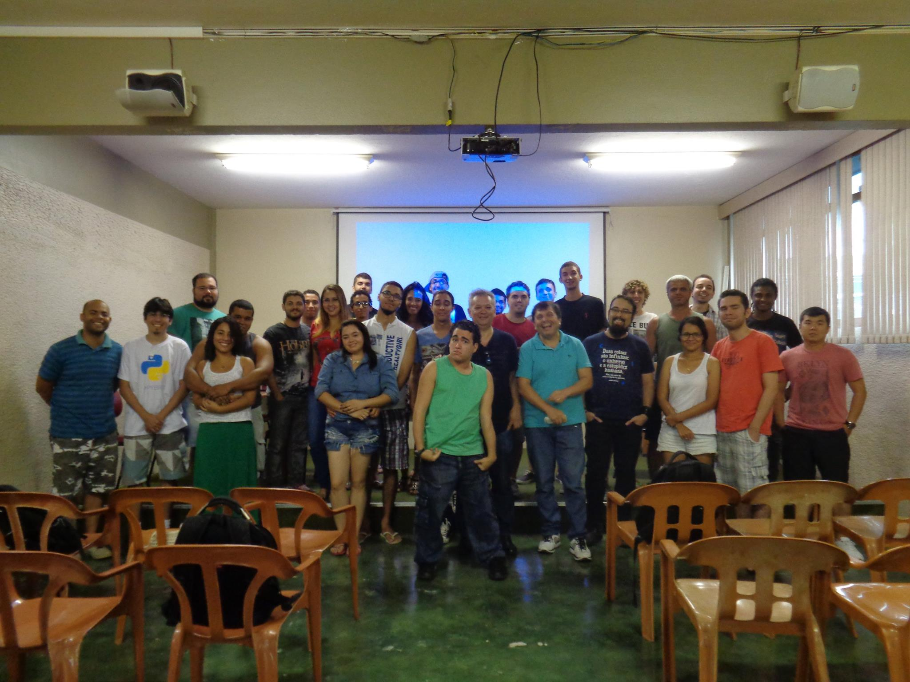

FISL 17
O Renascer de uma Comunidade
História da PythonRio no último ano
Bernardo Fontes
Paula Grangeiro
Porto Alegre/RS
14 de Julho de 2016
Avaliem, por favor

Como contar uma história que não vivemos inteira?
Vamos fazer um filme!
 ## Redução de Escopo
- ### Entrevistas por Hangout on Air
## Redução de Escopo
- ### Entrevistas por Hangout on Air
Surgimento da PythonRio
Giuseppe Romagnoli, Jonh Edson, Luiz Guilherme Aldabalde, Luis Gustavo, Flavio Coelho e Claudio Berrondo
#horaextra, DevInRio e afins

Henrique Bastos
DojoRio
Flávio Amieiro, Rodolfo Carvalho, Mariana Bedran e Jonatas Emídio
PythOnCampus: Campos

Tarsis Azevedo, Rodrigo Manhães e Vanderson Mota
PythonBrasil no Rio

Álvaro Justen (Turicas)
PythOnCampus: Petrópolis
E01S02
## PythonRio: o começo
- ### Grupo de **usuários de Python** do estado
- ### Uma lista que **surgiu em 2007**
- ### Ganhou vida numa **mesa de bar**
- ### Trouxe a **PyConBrasil pro Rio** em 2008
## PyConBrasil[4] - 2008
- ### ~350 participantes
- ### **Bruce Eckel** e **Alexander Limi**
- ### Inaugurou os **Open Spaces**
- ### **Keynotes**
- ### Palestra de **linguagem convidada**
- ### Embrião da **DojoRio**
## PythOnCampus
- ### Evento de **1 dia sobre Python** em campus de universidades
- ### Palestras, Dojo, Open Spaces...
- ### Foco em **divulgar** Python
- ### Mais de **12 edições**
- ### Uma "internacional" em **Natal/RN**
## DojoRio
- ### Sessões semanais de **Coding Dojo**
- ### Começou em 2008 e acontece **até hoje**
- ### **Sem tecnologias** específicas
- ### Encontros **itinerantes** na cidade
- ### Espalhou-se por **outras cidades** do estado
- ### **Germinador** de boa parte dos encontros da comunidade
## Multiplicidades!
- ### DojoRio
- ### #horextra
- ### ForkInRio
- ### ArduInRio
- ### RubyOnRio
- ### E muitas outras...
## PythonRioDay
- ### Encontros de **1 dia** da Comunidade
- ### **Preparativos** pra PythonBrasil
- ### Insipiração dos encontros de hoje
## PythonBrasil[8] - 2012
- ### Tatiana Al-Chueyr e Álvaro Justen “Turicas”
- ### ~350 participantes
- ### 6 Keynotes sendo 4 internacionais
- ### **Tutoriais** em parceria com a FGV
- ### Melhor **café** servido em evento
- ### Embrião dos eventos da **PythonNordeste**
3 anos depois, após uma PythonNordeste em Natal...
### 1 email
- ### Sem local
- ### Sem palestras
- ### Sem participantes
- ### Sem formato
- ### 1 data
- ### Era necessário **juntar** as pessoas
Até surgirem as PyLadies!
DjangoGirls@Niterói

DjangoGirls@Rio

VII Encontro PythonRio

Evolução Facebook
 ## O que aprendemos
- ### **Descentralização**
- ### Crie espaço para **pessoas engajadas** surgirem
- ### Respeitar o **tempo das coisas**
- ### Busque por **novas ideias** e novas pessoas
## O que aprendemos
- ### Não seja uma comunidade da **tecnologia X**
- ### Listas de email servem para a **interação técnica**
- ### **Interação social é necessária** é úse as outras mídias pra isso
- ### **Ocupe** as universidades
## O que aprendemos
- ### **Descentralização**
- ### Crie espaço para **pessoas engajadas** surgirem
- ### Respeitar o **tempo das coisas**
- ### Busque por **novas ideias** e novas pessoas
## O que aprendemos
- ### Não seja uma comunidade da **tecnologia X**
- ### Listas de email servem para a **interação técnica**
- ### **Interação social é necessária** é úse as outras mídias pra isso
- ### **Ocupe** as universidades
Muito obrigado a esses caras